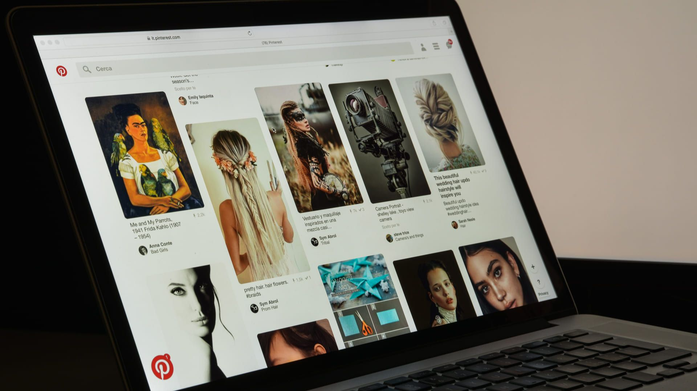
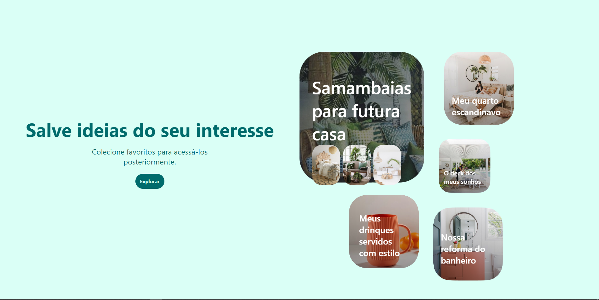
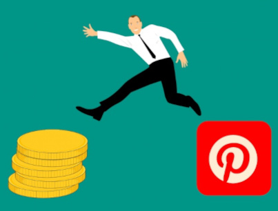
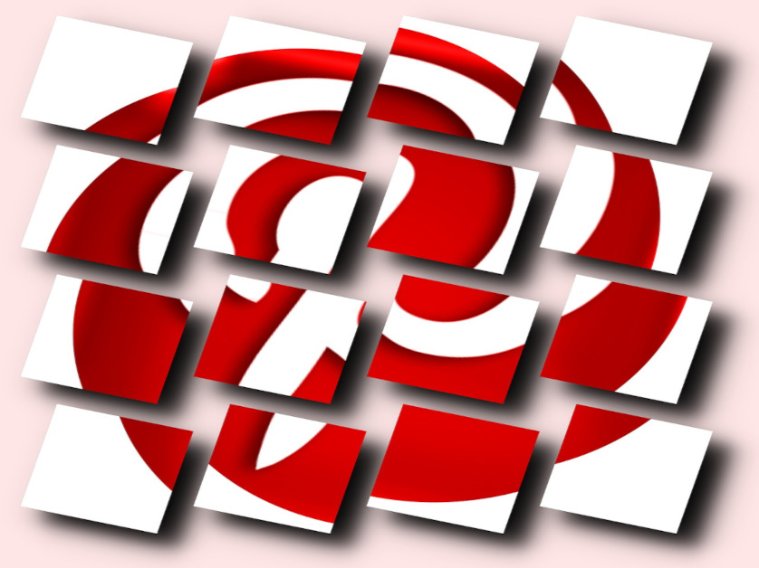

O que é?
Pinterest é uma rede social de compartilhamento de fotos, onde os usuários podem compartilhar e gerenciar imagens temáticas, como de jogos, de hobbies, de roupas, de perfumes, de animes, etc.
O próprio nome da plataforma, criado a partir da junção dos termos pin (alfinete) e interest (interesse), já diz muito sobre o seu funcionamento que permite o usuário organize os seus interesses em murais, como se estivesse pregando fotos em um quadro de cortiça.
Com fácil layout e rápido crescimento, tornou-se um novo meio de compartilhamento de imagens na internet, sendo eleito um dos melhores websites de 2011 pela Revista Time.
Historia
O Pinterest foi criado por Ben Silbermann🔗, Paul Sciarra🔗 e Evan Sharp🔗, tendo começado a ser desenvolvido em desembro de 2009 e sendo lançado em beta fechado em março de 2010.
Silbermann era um consultor de negocios que trabalhou para o Google🔗, onde ele aprendeu a pensar grande e se sentiu inspirado pelo trabalho da empresa.
Mas o Google era uma empresa de engenheiros.E Silbermann percebeu que, sem formação em engenharia, não teria muitas chances de criar algum produto novo lá.
Quando pediu demissão, ele nem sequer tinha um plano para a nova empresa. Tinha apenas um desejo de fazer algo grandioso.
Ele se associou a Paul Sciarra, um ex-colega de faculdade, na Cold Brew Labs🔗 (Laboratórios da Cerveja Gelada). Os dois começaram criando aplicativos para o iPhone🔗, mas não tiveram sucesso.
Silbermann adorava colecionar coisas quando era criança e se apoio em nessa experiencia pessoal para elaborar uma nova plataforma. E ao lodo de Sciarra e do designer e novo sócio Evan Sharp(que também tem um passado de colecionador compulsivo), ele criou o Pinterest.
No seu primeiro ano no ar, pouquíssimas pessoas notaram que ele existia. No final de 2010, a rede social havia conseguido apenas 10 mil usuários registrados, e muitos deles raramente iam ao site.
Quando perguntaram a Silbermann, por que, apesar do insucesso inicial, não havia desistido, ele respondeu em tom bem humorado:
Silbermann enviou mensagens a 200 amigos falando do Pinterest e entrou em contato pessoalmente com 5 mil usuários, divulgando o site e investigando as razões do fracasso.

Ao mesmo tempo, os tres socios se dedicavam obsessivamente a melhorar o design e o funcionamento do Pinterest.
O esforço começou a trazer os primeiros resultados na metade de 2011, quando sites especializados em tecnologia começaram a notar que o Pinterest existia.
No fim de 2011, a rede decolou e passou a crescer velozmente.
Diferente de outras redes sociais
Como observa um artigo no site All Things D🔗, a história do Pinterest segue a fórmula tradicional do empreendedorismo no Vale do Silício, mas vai contra algumas das modas atuais.
Sites com o Twitter🔗 e o Facebook🔗 enfatizam
a comunicação em tempo real. O Pinterest, ao contrário, encoraja a publicação de conteúdo atemporal.
Diferentemente do que manda a tradição do Google e de outras empresas da região, os engenheiros têm papel secundário nas decisões da Cold Brew Labs.
O Pinterest ainda vai contra a ideia de que uma iniciativa inovadora deve atender primeiro à elite tecnológica, aos chamados “early adopters” ávidos por novidades. Quem primeiro engordou a base de usuários da rede social foi um público formado, em sua maioria, por donas-de-casa do Meio-Oeste americano, que não tinham esse perfil. E, diferentemente do que aconteceu com o Twitter, por exemplo, não foi a presença de celebridades que atraiu o público ao site. Foi a divulgação boca-a-boca na internet.
Uso

O Pinterest é usado para carregar, guardar, classificar e gerenciar imagens, conhecidas como "pins", e outros conteúdos multimédias como vídeos, por exemplo, colocando-os em coleções conhecidas como "pinboards".
Os pins são classificados em categorias, como natureza,
lojas, moda, eletrônicos e entre outros.
Cada usuário pode compartilhar suas imagens, recompartilhar as de outros utilizadores e colocá-las em suas coleções ou quadros (boards),além de poder comentar e realizar outras ações disponibilizadas pelo site.
Para que os usuários possam interagir de uma forma mais ampla com outras comunidades, o site é afiliado com o Twitter e Facebook.

É possível também, semelhante ao botão curtir do Facebook, apertando o botão "Pin It", para demonstrar que aquele conteúdo lhe agrada.
Comercialmente

Com o lançamento do Pinterest, tornou-se comum o uso da rede social como uma vitrine virtual, onde comerciantes, principalmente do ramo da moda, expõem seus produtos para que os utilizadores do serviço compartilhem de forma rápida os produtos que lhe agradam.
Graças a isto, os comerciantes aumentaram o tráfego de usuários em seus web sites, e consequentemente o volume de vendas através do meio virtual.
Recepção
A ferramenta tornou-se rapidamente uma das mais populares redes sociais na internet, e um dos sites mais visitados alcançando a posição 39 na Alexa.
Um artigo no website Scientific American🔗, criticou um parágrafo nos Termos de Uso do Pinterest, por declarar que qualquer coisa postada, compartilhada e criada dentro do serviço, passará a pertencer também a Cold Brew Labs, criadora do site e que o mantém.
Os Termos de Uso do site declarou:
De acordo com os termos toda a propriedade pessoal, criativa e intelectual postada no serviço passaria a pertencer também a Cold Brew Labs e poderia ser vendido.
Em março de 2012 o site disponibilizou uma versão atualizada dos termos de uso, retirando o parágrafo, e declarando em seu blogue a seguinte frase: